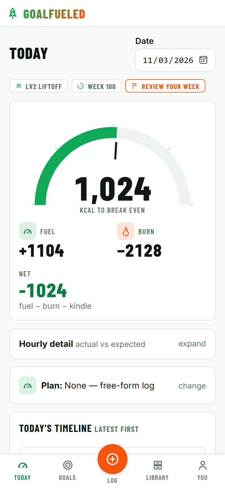
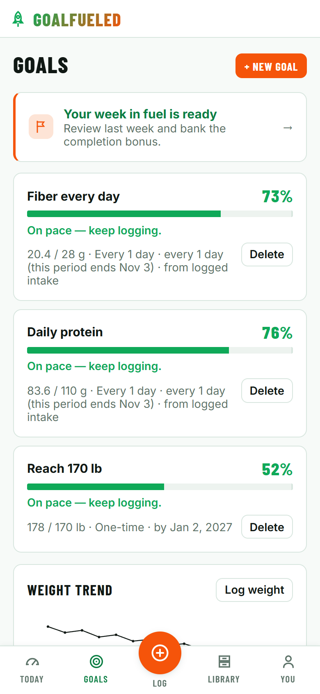
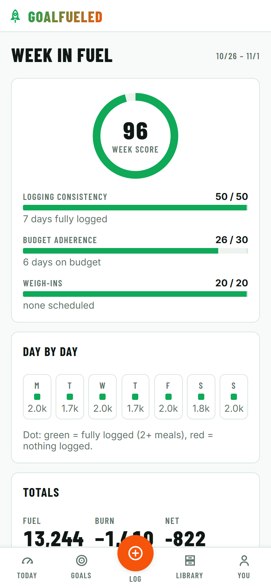
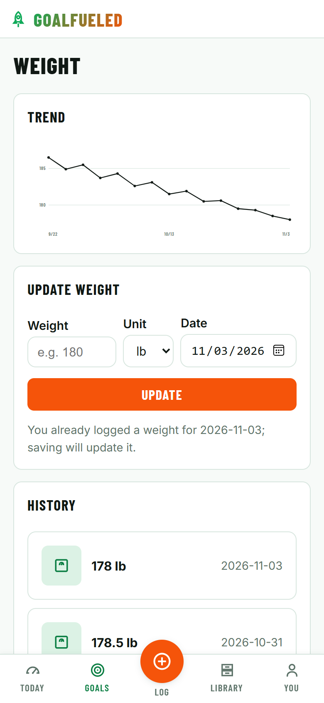
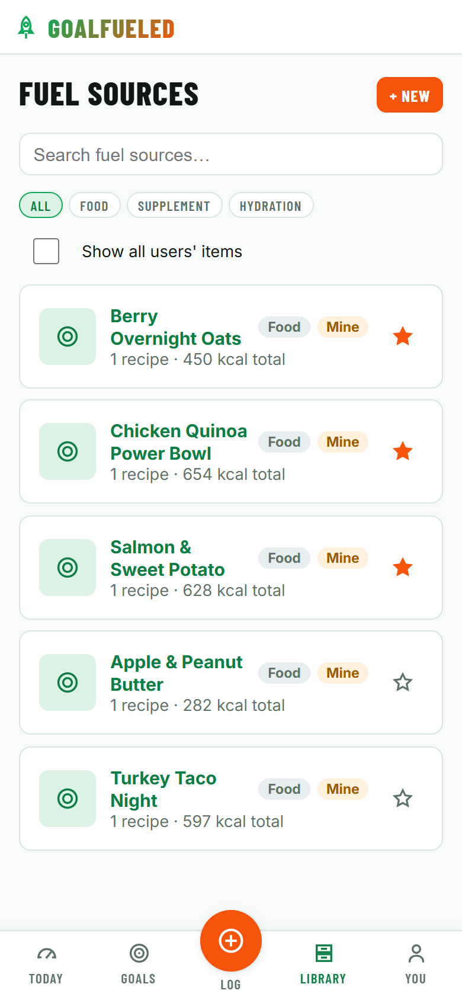
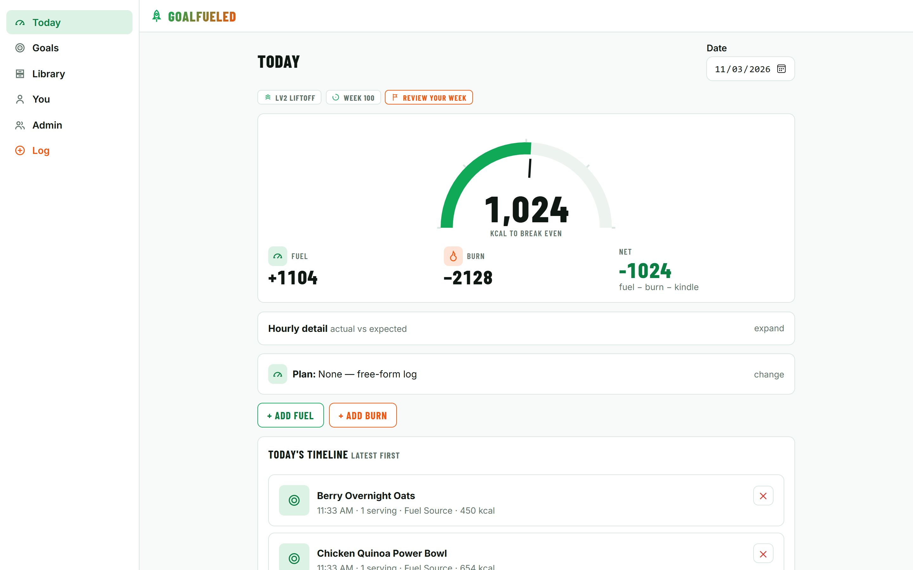

The fuel gauge
Your whole day in one dial: fuel logged, calories burned, and what's left to break even — with an hourly view of actual vs. expected.
Free & open source
GoalFueled turns your weight goal into one number you can act on today. Log what you eat and what you burn, follow a meal plan if you want one, and watch the gauge tell you exactly how much fuel is left before you break even.
Mobile-first web app · No install · Sign in with Google

Lose, maintain or gain. Your profile sets your daily “kindle” — the calories you burn just by living.
Tap a favorite, scan a barcode, or just say “I had oatmeal with berries.”
Fuel − burn − kindle = net. One glance tells you if today is on track.
Your whole day in one dial: fuel logged, calories burned, and what's left to break even — with an hourly view of actual vs. expected.
An AI assistant turns “a quarter pounder with fries” into real logged fuel — and asks before it creates anything.
Scan a product to pull nutrition from Open Food Facts, or photograph a label and let vision OCR read it for you.
Build recipes from a USDA-backed ingredient library, bundle them into fuel sources, and schedule daily or weekly plans.
Weight targets and daily nutrient goals — protein, fiber, sodium, anything on the label — with live progress from what you log.
A weekly review scores consistency, budget adherence and weigh-ins. Earn Fuel Points, level up, keep the streak alive.
Log weigh-ins on your own schedule and see the trend line that actually matters, not the daily noise.
Invite a partner, coach or dietitian to view your log or manage your meal plans — and revoke access any time.





GoalFueled is built in the open. Read the code, run it yourself, or help make it better. The whole stack runs locally with no cloud account — an in-memory store and preset dev logins get you from clone to working app in minutes.
# API (port 7071)
cd src/GoalFueled.Api
cp local.settings.example.json local.settings.json
func start
# Web (port 5173)
cd src/web
npm install
npm run dev